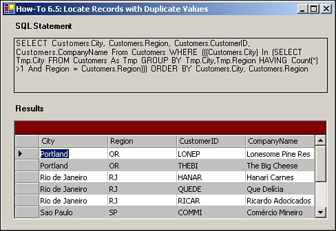

6.5 Take Advantage of Using Subqueries
I think there are some duplicate records in one of my tables. Also, I need to know which of the cities (and regions) in a Northwind database has more than one customer in it. How can I use subqueries to perform these tasks?
Technique
To get the answers to the situations just presented, you will use a subquery in your T-SQL statement. A subquery is a complete SELECT statement. Following is the query that will be used for this How-To. It uses a subquery in the WHERE clause of the outer, or main query:
SELECT Customers.City, Customers.Region, Customers.CustomerID,
Customers.CompanyName From Customers WHERE (((Customers.City)
IN (SELECT Tmp.City FROM Customers As Tmp GROUP BY Tmp.City,Tmp.Region
HAVING Count(*)>1 And Region = Customers.Region)))
ORDER BY Customers.City, Customers.Region
You can see in this query that in the WHERE clause, the City column in Customers is used with an IN operator. The subquery in this case returns all the cities that are assigned to more than one customer.
Note
 |
In this case, you are using a subquery much as you would a joined table or against another view. The nice thing about using the subquery is that you can see the entire query here, instead of opening another view that is joined.
Performancewise, there is no benefit or degradation in using subqueries.
|
In addition to using subqueries in WHERE clauses, you can use them anywhere you would use an expression.
Steps
Open and run the "Visual Basic .NET-Chapter 6" solution. From the main form, click on the button with the caption How-To 6.5. Much like a couple of the other How-Tos in this chapter, you will see the query displayed in the label on the top of the form, with the results displayed in the data grid object below (see Figure 6.6).
Create a Windows Form. Then place the controls listed in Table 6.5 with the properties set displayed in Figure 6.6.
Table 6.5. Control Property Settings for This How-To
|
Label
|
Text
|
SQL Statement
|
|
Label
|
Name
|
lblSQLString
|
|
Label
|
Text
|
Results
|
|
DataGrid
|
Name
|
dgResults
|
Add the code in Listing 6.10 to the Load event of the form. (Double-click on the form to bring up the code.)
Listing 6.10 frmHowTo6_5.vb: Loading and Executing the SQL Statement by Using the Subquery
Private Sub frmHowTo6_5_Load(ByVal sender As System.Object,
ByVal e As System.EventArgs) Handles MyBase.Load
'-- Build the SQL String that returns cities that
' have more than one customer in them.
Dim strSQL As String
strSQL = "SELECT Customers.City, Customers.Region, " &
"Customers.CustomerID, Customers.CompanyName "
strSQL &= "From Customers "
strSQL &= "WHERE (((Customers.City) In "
strSQL &= "(SELECT Tmp.City FROM Customers As Tmp "
strSQL &= "GROUP BY Tmp.City,Tmp.Region HAVING Count(*)>1 "
strSQL &= "And Region = Customers.Region))) " & _
"ORDER BY Customers.City, Customers.Region"
Me.lblSQLString.Text = strSQL
'-- Use the SQL String to build the data adapter and fill the data table.
Dim odaResults As New OleDb.OleDbDataAdapter(Me.lblSQLString.Text,
BuildCnnStr("(local)", "Northwind"))
Dim dtResults As New DataTable()
Try
odaResults.Fill(dtResults)
Catch excp As Exception
MessageBox.Show(excp.Message)
Exit Sub
End Try
'-- Assign the data table to the data grid's DataSource property
Me.dgResults.DataSource = dtResults
End Sub

Comments
Subqueries are a powerful tool for getting at your data in different ways. Following are some rules you have to remember when using subqueries:
You can only use an ORDER BY clause if you are using the TOP clause.
If a table is being used in the subquery but not in the main query, then you cannot use columns from that table in the output of the main query.
You need to use parentheses around the subquery SELECT statement.
You can't include a FOR BROWSE or COMPUTE clause in the subquery.